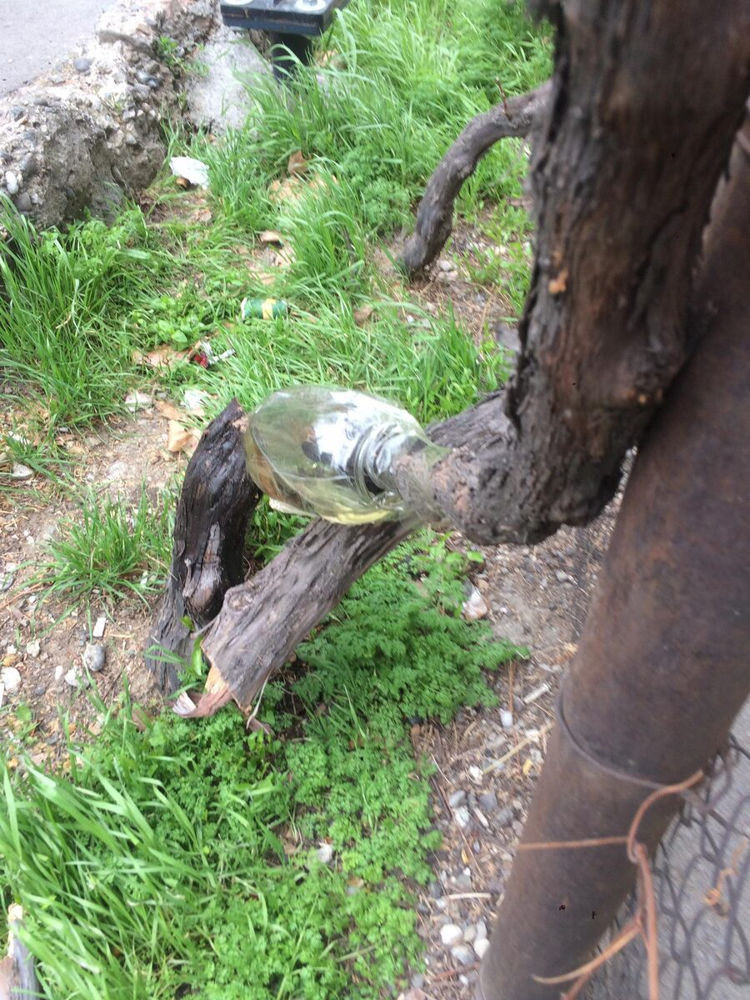
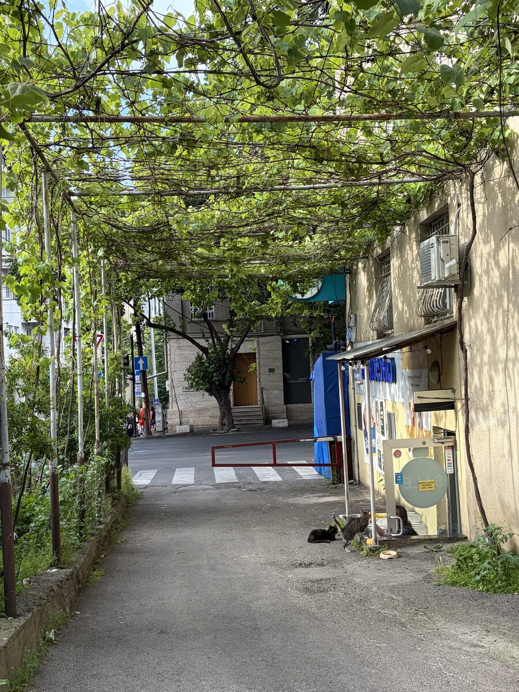
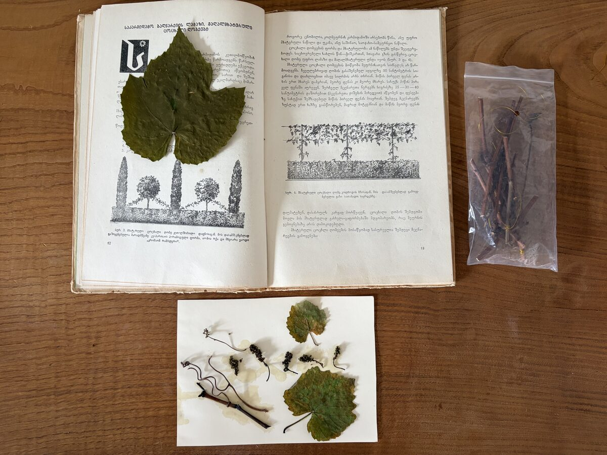

In March 2023, a video went viral in Georgia. A man had stumbled upon a grapevine pergola, freshly cut down, in front of Soviet mass housing in Vake, one of Tbilisi's central neighborhoods. He filmed it, furious.
“Look how Georgianness is being cut off.” — from the video, shared on social media, March 2023
His anger said something true: in Georgia, a grapevine is never just a plant. It is a way the city holds itself together — and when it is cut, something more than wood is severed.
Why a vine matters
Grapevines have shaped this landscape for centuries. The old Georgian words for a vineyard, tsalkoti and samotkhe, both also mean “paradise.” In the 1950s, as villagers moved to Tbilisi to work in new Soviet industries, they brought vine cuttings with them and planted them around their new apartment blocks — turning bare concrete courtyards into shaded, fruit-bearing, breathing places. Grapevines became the city's own improvised, living infrastructure.
The cutting
This particular pergola was cut down by the head of the local homeowners' association, who was tired of the dust it left on his car. But the story did not end there. Neighbors gathered the severed roots and set them in containers of water, refusing to let the vine simply die.

The restoration
The roots took. Slowly, the vine grew back — first as thin shoots, then as the canopy it is today, shading the same courtyard once again. As one resident put it, the fairy tale has a happy ending: the vine survived, and the association head who cut it down was eventually removed from his post.

An archive of care
Alongside the restoration, this vine's leaves, grape clusters, and cuttings were pressed and laid out beside a 1950 Soviet manual on decorative gardening — the same tradition that first brought vines into Tbilisi's courtyards. Old instructions for cultivating “inside the block greenery,” and the quiet, improvised care of a single plant, side by side.

Other vines, other stories
This is one pergola among many. Across Tbilisi's courtyards, similar vines — planted, cut, fought over, replanted — keep quietly reshaping the city's blocks.
“The fairytale has a happy ending” — though the vine, like the city around it, keeps needing care to stay that way.